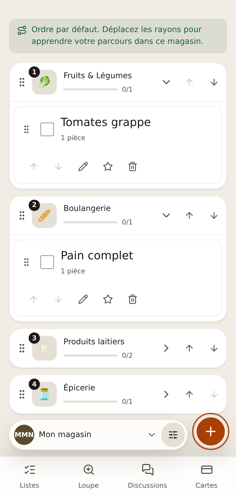
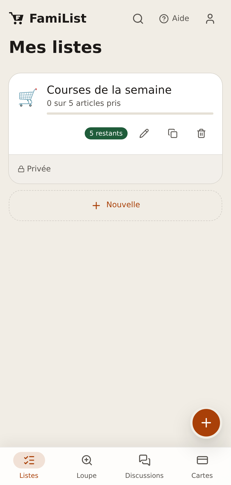
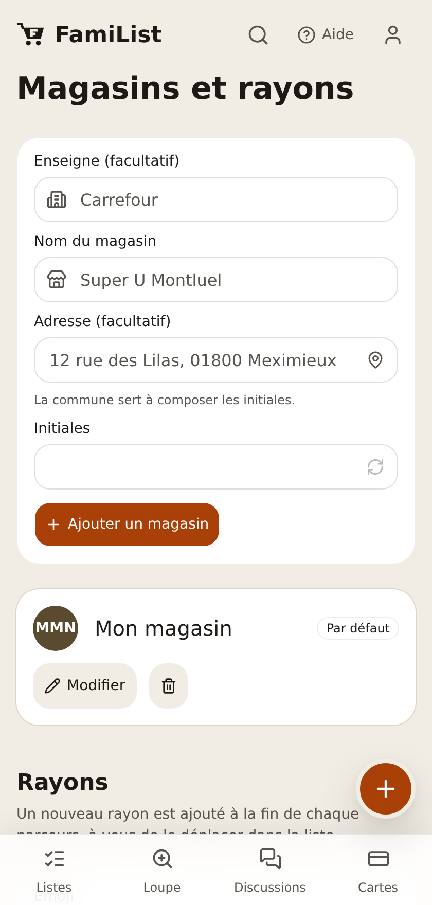
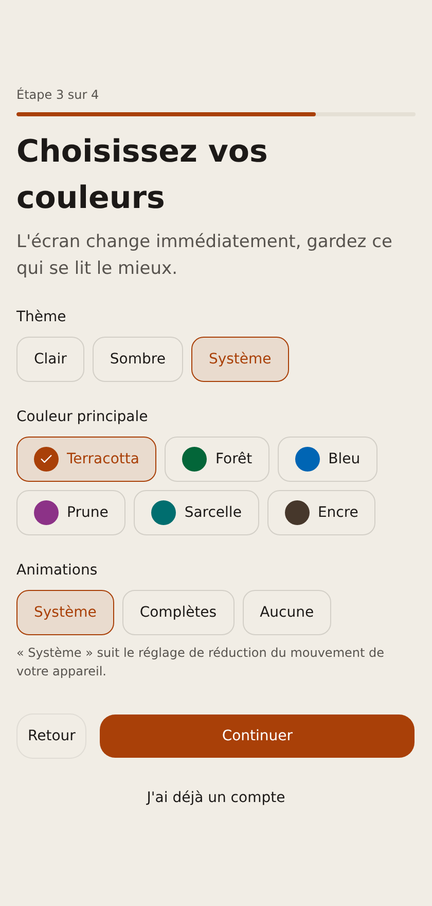

FamiList
Tout le monde écrit dessus en même temps, les rayons sont dans l'ordre du magasin où vous êtes vraiment, et ça continue de marcher quand le supermarché n'a pas de réseau. Personne ne vend rien avec.
Essayer la démo L'installer chez soi Le code
Libre, sans publicité, sans compte chez qui que ce soit.
La plupart sont l'une de deux choses. Une note partagée dans une messagerie, que personne ne peut réordonner et qui perd la moitié de ce qui a été tapé. Ou une application gratuite qui lit la liste pour vendre ce qu'il y a dessus.
FamiList est la troisième option : une commande Docker et une base que vous possédez. Rien n'en sort, il n'y a pas de compte à créer ailleurs, pas de publicité, pas de suggestion de produit payée par une marque. Les données sont dans votre Supabase — hébergé ou sur une machine à la maison — et l'application n'est qu'un dossier de fichiers qui n'exécute rien sur un serveur.
Des captures de l'application, prises telle qu'elle tourne.




Une modification apparaît tout de suite sur les autres téléphones.
Tout est écrit en local d'abord et envoyé au retour du signal. Un sous-sol de supermarché ne change rien.
Ajouter un article ou une carte de fidélité sans rien taper.
Le plastique reste à la maison.
Avec sondages de date et répartition de qui apporte quoi — la partie qui vit d'habitude dans un groupe à part.
Pour lire une étiquette en rayon, avec lumière, gel de l'image et contraste.
Français, anglais, allemand, espagnol, italien, portugais, russe, chinois, arabe, malgache — chacune dans sa propre écriture.
Le même build, emballé par Capacitor.
Taille de texte, police, mouvement réduit, disposition gaucher : intégrés, pas ajoutés.
Il faut Docker, et un endroit où loger la base : un projet gratuit sur supabase.com, ou une pile sur votre propre machine. Le guide couvre les deux.
git clone https://github.com/techmefr/Familiste.git
cd Familiste
cp .env.example .env
Deux valeurs dans .env : l'adresse de votre base et sa clé publique.
docker compose up -dL'application répond sur http://localhost:8080.
/admin. Le reste — l'envoi des
e-mails, le jeton GitHub — se règle depuis l'application, sans terminal.